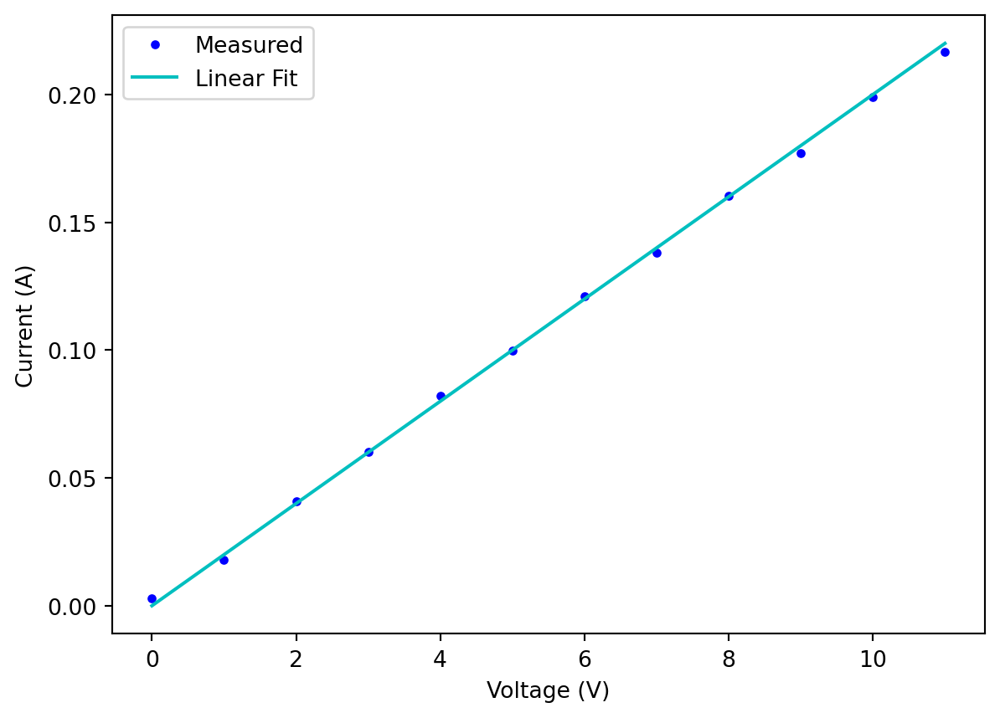
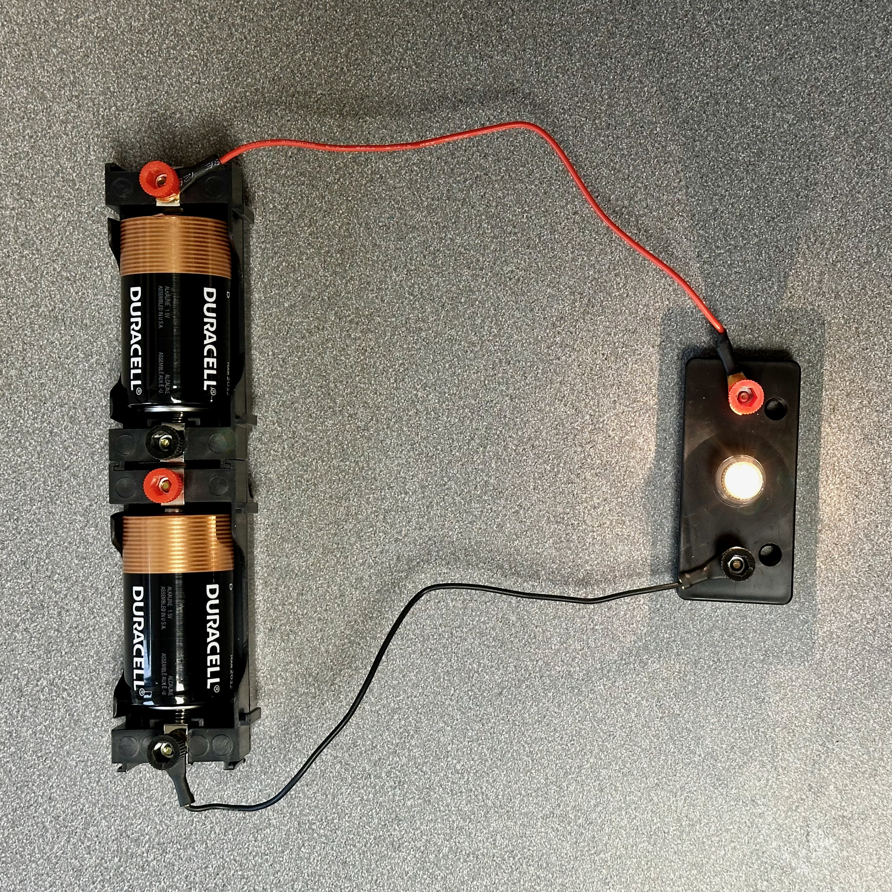
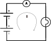
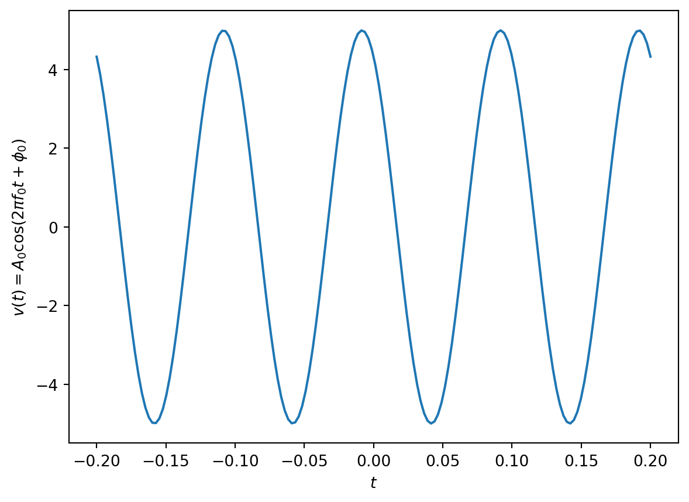

Electrical Circuits and Signals
It is challenging to talk about radio systems without eventually referencing electrical circuits and signals, which are nominally the domain of electrical engineers. There is a fair amount of jargon related to these issues. This module will introduce the foundational concepts and terminology of circuits and signals for a more general audience, with the goal of helping non-engineers converse with, and ask tough questions of, the engineers.
1 Circuits, Voltages, and Currents
Somewhere along the way, you probably took a science course in which you tinkered with batteries and light bulbs. When you connect the two terminals of a battery to the two terminals of a lightbulb as shown in Figure 1, you create a closed path of electrical conductors called a circuit that allows current to flow from the battery, through the wires, and into the light bulb; the light bulb illuminates. If you disconnect a wire from either the battery or the light bulb, the circuit is broken, current does not flow, and the light bulb goes dark.

The battery is an electrical power source, and the light bulb is an electrical load. When the two are connected in a circuit, power is transferred from the battery to the light bulb. Some of that power is dissipated as heat the light bulb, and some of the power is converted into light.
How do we know what kind of battery will work with different light bulbs? If we use too small a battery for a given light bulb, it may not light up. On the other hand, if we use too powerful a battery, the bulb may burn out. The answer is to understand some properties of batteries, light bulbs, and circuits to make sure things work together. A key tool for developing this understanding is to create a model for the electrical circuits, studying the behavior of the models, and translating insights from the models into designs for the circuits. This is a form of abstraction this is common in engineering fields. Models are often developed with special-purpose symbols and diagrams as well as key mathematical equations that governing the behavior.
1.1 Circuit Symbols and Diagrams
The first step in creating a model of the electrical circuit in Figure 1 is to introduce graphical symbols that represent the battery and the light bulb. These two symbols are shown in Figure 2.
Note that each symbol may include parameters that are specific to the type of electrical element. For example, the key parameter for a battery would typically be its voltage, which is measured in units of Volts (V). We will identify a key parameter of the lightbulb in Section 1.3.
The second step in creating a model for the electrical circuit in Figure 1 is to capture the wiring connections that create the circuit between the battery and the light bulb. This circuit diagram is shown in Figure 3.
In addition to the battery and lightbulb symbols, the circuit diagram includes solid lines that represent conducing wires connected between the two circuit elements. The last additional notation in the circuit diagram is an arrow indicating the flow of current, which is measured in Amperes (A).
1.2 Measuring Current and Voltage
A natural question is how much current flows in the circuit in Figure 1? We can answer this question by inserting into the circuit an instrument that measures current, which is called an ammeter.


When we connect this circuit, current flows, the light bulb lights, and we obtain a measurement on the ammeter of \(0.002\) Amps, or \(2\) milliamps (\(10^{-3}\) amps, denoted mA).
Another natural question is how much voltage is there across the lightbulb in Figure 1? We can answer this question by inserting across the circuit an instrument that measures voltage, which is called a voltmeter.

Again, when we connect this circuit, the light bulb lights, and we obtain a measurement on the voltmeter of around \(3\) Volts, basically the same as the sum of the two battery voltages of \(1.5\) V.
1.3 General Voltage and Current Relationship
With the ability to take measurements, we can now create an experiment to establish a more general relationship between current and voltage in circuits like the one in Figure 1. For a given lightbulb, we can use batteries with different voltages and measure how much current flows through the bulb. For example, we can connect two of the same battery in series, and we find that we measure very close to twice the current measured with a single battery. Similarly, we can connect three of the same battery in series, and we find that and we find that we measure very close to twice the current measured with a single battery. There can be small sources of measurement errors, or noise, in the results, but if we plot the them, we would find that they basically obey a linear trend as illustrated in Figure 6.
Warning
The data in Figure 6 is synthetic. It should be replaced with measurements.
The linear relationship suggested by the measurements illustrated in Figure 6 is called Ohm’s Law, which is written
\[V = I\cdot R \quad \text{or} \quad I = \frac{V}{R}, \tag{1}\]
where the quantity \(R\) is called the resistance of the lightbulb, and is measured in units of Ohms \(\Omega\). Conveniently, we can take measurements with all sorts of batteries and many different kinds of lightbulbs in the context of the circuit diagram of Figure 3, and their current-voltage relationship will follow Ohm’s Law Equation 1. This illustrates something powerful about the abstraction created by the combination of the diagram in Figure 3 and the equation in Equation 1. Not all circuit elements will have such a simple current-voltage relationship as the light bulb, but for any circuit element that has such a linear relationship, we can think of it acting like a light bulb. Such circuit elements are generically referred to as resistors.
Ohm’s Law tells that a resistor limits the flow of current from a battery. Examining Equation 1, for a given voltage \(V\), a larger resistance \(R\) will lead to a lower current \(I\). On the other hand, a smaller resistance \(R\) will lead to a larger current \(I\). In the extreme of arbitrarily small resistance (\(R\rightarrow 0\)), we have a short circuit and the current becomes arbitrarily large (\(I\rightarrow \infty\)). We generally avoid directly connecting a highly conducting wire across the two terminals of a batter for exactly this reason.
1.4 Electrical Power and Decibels
Electrical power is measured as the product of the current through and the voltage across a circuit element, i.e.,
\[P = V \cdot I, \tag{2}\]
which is measured in Watts (W). If we are looking at the power dissipated in a resistor, we can substitute Ohm’s Law Equation 1 in Equation 2 to obtain
\[P = I^2\cdot R \quad \text{or} \quad P=\frac{V^2}{R}. \tag{3}\]
Power is often specified relative to a reference power level, and on a logarithmic scale. In particular, if \(P\) denotes a power level we care about in a circuit, and \(P_{\mathrm{r}}\) denotes a reference power level, the relative power between them is computed as \(P/P_{\mathrm{r}}\). Here \(P\) and \(P_\mathrm{r}\) are in the same units, so the relative power is unitless; furthermore, since power is always a positive quantity, the relative power is also positive.
The logarithmic scale is created through the following equation \[P\ \mathrm{dBr} = 10 \log_{10} \frac{P}{P_{\mathrm{r}}}. \tag{4}\] Here the units are decibels (dB) generally, with dBr making the units of the reference power level explicit. Common reference power levels are \(1\) W, in which case the units are denoted dBW, and \(1\) milliwatt (\(10^{-3}\) Watts, denoted mW), in which case the units are denoted dBm. Table 1 provides several example power levels on absolute and dB scales for these conventional reference power levels.
| Power \(P\) | Reference Power \(P_\mathrm{r}\) | dBr |
|---|---|---|
| \(1\) W | \(1\) W | \(0\) dBW |
| \(2\) W | \(1\) W | \(3\) dBW |
| \(\frac{1}{2}\) W | \(1\) W | \(-3\) dBW |
| \(10\) W | \(1\) W | \(10\) dBW |
| \(100\) W | \(1\) W | \(20\) dBW |
| \(1000\) W | \(1\) W | \(30\) dBW |
| \(1\) mW | \(1\) W | \(-30\) dBW |
| \(1\) W | \(1\) mW | \(30\) dBm |
| \(1\) mW | \(1\) mW | \(0\) dBm |
| \(2\) mW | \(1\) mW | \(3\) dBm |
| \(\frac{1}{2}\) mW | \(1\) mW | \(-3\) dBm |
| \(10\) mW | \(1\) mW | \(10\) dBm |
| \(100\) mW | \(1\) mW | \(20\) dBm |
| \(1000\) mW | \(1\) mW | \(30\) dBW |
We observe from the examples in Table 1 that multiplication in absolute power level corresponds to summation in the logarithmic dB scale. For example, \(100=10\times 10\) W corresponds to \(20=10+10\) dBW. Thus, if we can factor an absolute power level into the multiplication of smaller factors, we can simply add their corresponding dB values. For example, \(8=2\times 2 \times 2\) W would be \(9=3+3+3\) dBW.
Finally, we point that something that can be confusing about the dB scale. Even though power is a positive quantity on an absolute scale, it can be negative on the dB scale. We obtain negative values on the dB scale when the power is smaller than the reference power level, and we obtain positive values on the dB scale when the power is larger than the reference power level.
Warning
We may want to introduce energy as well, the product of power and an interval of time? Measured in Joules (Watt-seconds)?
2 Time-Varying Signals
Often the currents and voltages in a circuit vary as a function of time, and we refer to them as signals. We denote such signals using the functional notation \(i(t)\) and \(v(t)\) for a current or voltage signal, respectively. The variable \(t\) taking values on the real line \(\mathbb{R}\) and has units of seconds.
2.1 Sinusoidal Signals
A very important class of signals are sinusoidal signals, such as \[v(t)=A_0 \cos(2\pi f_0 t + \phi_0), \quad t \in \mathbb{R}. \tag{5}\] The parameter \(A_0\) is called the amplitude, the parameter \(f_0\) is called the frequency of the sinusoid, and the parameter \(\phi_0\) is called the phase of the sinusoid.
Sinusoidal signals have an important property: they repeat themselves every so often. This property is illustrated in Figure 7.

Mathematically, if we define \(T_0 = 1/f_0\), we see that \[\cos(2\pi f_0 (t + T_0)+\phi_0) = \cos(2\pi f_0 t + 2\pi+\phi_0)=\cos(2\pi f_0 t+\phi_0). \tag{6}\] In words, this equation says that the signal repeats itself every \(T_0\) seconds, and we say that the signal is periodic. The parameter \(T_0\) is called the period of the signal in this case.
The parameter \(f_0=1/T_0\) represents the number of periods or cycles of the sinusoid in one second. The units of frequency are Hertz (Hz).
2.2 Sinusoidal Series Approximations for More General Signals
Another very important property of sinusoidal signals is that they can be added together in just the right way to approximate more general signals. Since a large class of signals can be approximated in this way, the sinusoids are somehow fundamental to the study of signals, and they are relatively simple signals with which to work.
Mathematically, if we start with a signal \(v(t)\) on the finite interval \(t\in [-T_0/2, T_0/2)\), we can approximate it with the signal \[v_K(t) = A_0 + \sum_{k=1}^{K} A_k \cos\left(2\pi \frac{k}{T_0} t\right) + B_k \sin\left(2\pi \frac{k}{T_0} t\right). \tag{7}\] This approximation is called a (finite) Fourier Series approximation of \(v(t)\). A few observations and comments about this approximation are in order:
- \(v_K(t)\) consists of a sum of \(K+1\) terms, and each term consists the a scaled cosine signal plus a scaled sine signal of the same frequency. The first time \(A_0\) is the direct-current (DC) component, a constant voltage that we can think of as a cosine signal of frequency zero.
- The set of frequencies in the summation are integer multiples of the frequency parameter \(f_0=1/T_0\), which is called the fundamental frequency. The frequencies \(2f_0,3f_0,\ldots, Kf_0\) are called harmonic frequencies in the approximation.
- The coefficients \(A_0\) and \(\{A_k,B_k\}\), \(k=1,2,\ldots,K\) are called the Fourier Series coefficients, and can be computed analytically or numerically with the following integrals: \[\begin{align} A_0 &= \frac{1}{T_0} \int_{-T_0/2}^{T_0/2} v(t) dt \\ A_k &= \frac{2}{T_0}\int_{-T_0/2}^{T_0/2} v(t) \cos\left(2\pi \frac{k}{T_0} t\right) dt, \quad k=1,2,\ldots,K \\ B_k &= \frac{2}{T_0}\int_{-T_0/2}^{T_0/2} v(t) \sin\left(2\pi \frac{k}{T_0} t\right) dt, \quad k=1,2,\ldots,K \end{align}\]
- The approximation improves as we increase \(K\), and in particular, the integral of the squared error goes to zero. Mathematically, we have \[\int_{-T_0/2}^{T_0/2} |v(t)-v_K(t)|^2 dt \rightarrow 0 \quad \text{as} \quad K\rightarrow\infty.\]
The mathematics involved in the Fourier Series approximation can be intimidating, but we have included the highlights in the above comments for completeness. In practice, the Fourier Series approximation allows us to think about the signal \(v(t)\) in the frequency domain. In particular, instead of specifying the signal as a full time-domain waveform, we can characterize it using just \(3K+1\) numbers, specifically the harmonic frequencies \(\{k f_0\}\), the cosine signal component amplitudes \(\{A_k\}\), and the sine signal component amplitudes \(\{B_k\}\) for \(k=1,2,\ldots,K\) as well as the DC component amplitude \(A_0\).
3 Knowledge Check Questions
- What is the unit of measurement for voltage?
- Amperes (A)
- Watts (W)
- Volts (V)
- Ohms (Ω)
- What is the relationship between current and voltage described by Ohm’s Law?
- \(V = I + R\)
- \(I = \frac{V}{R}\)
- \(P = V \times I\)
- \(P = \frac{V}{I}\)
- What are the key parameters used to describe a sinusoidal signal?
- Voltage and Resistance
- Frequency and Amplitude
- Current and Power
- Resistance and Capacitance
- What is the purpose of a Fourier Series approximation in signal analysis?
- To measure electrical power
- To calculate resistance values
- To approximate more general signals using sinusoidal signals
- To measure the phase difference between current and voltage
- What happens to the Fourier Series approximation as the number of terms increases?
- The approximation becomes less accurate
- The approximation remains the same
- The approximation improves
- The approximation becomes undefined
4 Basic Math Questions
- What is the result of \(3 \times 4 + 2\)?
- 10
- 14
- 16
- 20
- If a resistor has a resistance of 50 ohms and a current of 0.2 amps passes through it, what is the voltage across the resistor according to Ohm’s Law?
- 10 volts
- 15 volts
- 25 volts
- 30 volts
- If a circuit component dissipates a power of 40 watts and the current passing through it is 5 amps, what is the voltage across the circuit component?
- 8 volts
- 20 volts
- 200 volts
- 245 volts
- Convert the power level of 2000 watts to decibels relative to a reference power level of 1 watt (dBW).
- 13 dBW
- 23 dBW
- 33 dBW
- 43 dBW
- If the relative power between two signals is 0.1, what is the power level in decibels?
- 0 dB
- 10 dB
- -10 dB
- -20 dB